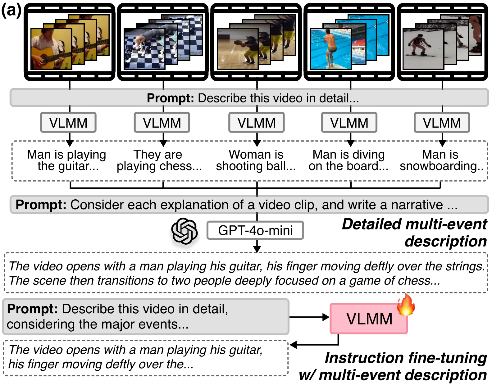
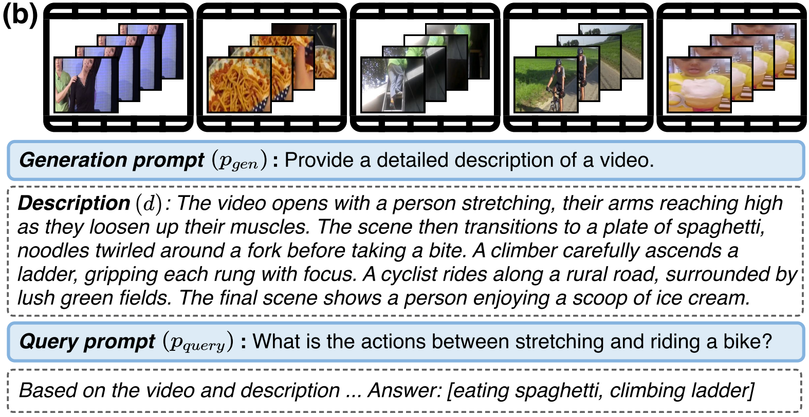

STAGE 1
Multi-Event Instruction Fine-Tuning
Problem: Existing video descriptions oversimplify multi-event videos into a single summary, losing fine-grained temporal details.
Solution:
- Generate segment-wise descriptions using pre-trained VLMM
- Merge into coherent temporal narrative via GPT-4o-mini
- Fine-tune with 120K multi-event descriptions

Overview of multi-event instruction fine-tuning
STAGE 2
Temporal Chain-of-Thought
At inference time:
- Model first generates a detailed chronological description of the video
- Description serves as explicit reasoning context
- Model uses it alongside original video to answer the query
"Articulate what happens and when before reasoning about the answer"

Overview of temporal Chain-of-Thought